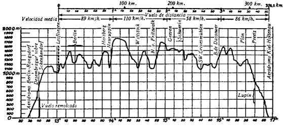

Manual del Vuelo a Vela
Wolf Hirth
1942
Vuelo Berlín - Kiel como vuelo con objetivo
de los juegos olímpicos
por
LUDWIG ROTTER, de Budapest
(Séanos
permitido llamar la atención sobre la sencillez con que está hecho el relato de un vuelo
que atestigua el dominio que el hombre ha llegado tener sobre las fuerzas de la
Naturaleza. - N. del T.)
Para
hacer una prueba demostrativa de que el vuelo a vela es efectivamente un juego olímpico,
emprendí un vuelo con objetivo desde la Olimpíada de Berlín a la Olimpíada de Kiel, en
donde había los juegos de regatas. El parte meteorológico del 12 de agosto en
Rangsdorf no era favorable, a pesar de lo cual preparé mis provisiones y demás elementos
necesarios y tanto yo como mi « Nemere » estábamos dispuestos para partir. Después
de un envuelo en falso, a consecuencia de una mala interpretación de señales con el
piloto que iba a remolcarme, vi formarse otra vez, poco después de las doce horas,
algunos pequeños cúmulos por delante del aeródromo, los cuales me pareció que
tendrían 200 m. de espesor, con su base a unos 1600 ó 1700 m. de altura. El piloto
deportivo Heinz Schubert tomó a su cargo remolcarme y envolamos a las 12,26 horas
tomando la dirección Este contra el viento reinante. Desembragué a las 12,38 sobre
Schenkendorf, 12 km. al Este del aeródromo, a una altura de 470 m. sobre el nivel del mar
y, con una velocidad ascensional de 2 a 3 m/s., subí a una altura de 1160 m. Allí
atravesé la nube y perdí altura, pero evité seguir perdiéndola virando en círculo
en una térmica seca. Vi formarse nuevas nubes en la dirección Berlín-Schöneberg y esto
me decidió a emprender el vuelo a fondo, cosa que hice a las 13,02 horas.
La
hora era ya muy avanzada para un vuelo de objetivo tan lejano, a lo que se añadía un
viento de 25 km./hora de un rumbo de 90 a 100º, mientras que la dirección del vuelo que
yo quería hacer era de 320º, así que tenía que luchar con una deriva hacia el Oeste.
Pero el « Nemere » tenía tan gran velocidad y por medio de sus alerones de curvatura,
regulables en vuelo, podía adaptarse a las necesidades de un vuelo rápido de tal modo -
en este aparato sólo marca el variómetro 2 m/s. de velocidad descendente a 140 km. por
hora - que, a pesar de todo, creí que podía hacer el vuelo, aunque se ofrecían,
además, otras dificultades: no conocer las circunstancias meteorológicas existentes ; el
itinerario cruzaba comarcas con lagos, pantanos y bosques, y hasta habría de volar
sobre la bahía de Lübeck y cerca del mar, no habiendo tampoco antecedentes de
condiciones para el vuelo a vela en estas regiones que todavía estaban sin explorar, en
este sentido, por los pilotos alemanes de vuelo sin motor. Por último, nada menos que 220
km. hacia el Norte tenía que separarme de la dirección del viento reinante.
Naturalmente que era mucho lo que yo me jugaba en esta empresa, así que me propuse
aumentar todo lo posible la velocidad de crucero sin atender para nada a la altura y no
detenerme a virar en círculo más que cuando estuviese por debajo de los 900 m. o que
hubiese de avanzar por una zona sin nubes y necesitase entonces disponer de suficiente
altura. El primer caso no llegó a ocurrirme, ni, con demasiada frecuencia, el segundo,
especialmente en la tercera hora del vuelo (figura 148).
Utilicé
para el vuelo una carta para el tráfico aéreo, del Imperio Alemán, en escala de 1 :
1000 000 en la que había trazado de antemano la recta Berlín-Kiel, así como había
señalado los trayectos de 100 km. Como había contado con la deriva hacia el Oeste, en
cuanto tenía que volar por zonas en las que me veía obligado a virar mucho en redondo
para ganar altura, me pareció que sería mejor mantener siempre rumbo al Norte para que
lo más que pudiese ocurrir fuese ser llevado por el viento hasta la línea de ruta, pero
nunca al Oeste de ella.
Por
tanto, puse los alerones de alabeo a la velocidad máxima y tomé rumbo Norte, casi
siempre con 120 a 140 km. hora de velocidad, viré raras veces y únicamente maniobraba,
mandando hacia abajo los alerones, al volar sobre zonas con térmica, reduciendo entonces
la velocidad a 60 km./hora. A las 13,52 pasaba sobre Herzberg, de modo que, a pesar del
viento de costado, había hecho 89 km. en cincuenta minutos, atravesando en este tiempo
los bosques del Noroeste de Berlín y los temidos pantanos de Rhin-Luch. Pero entonces,
por la acción del lago Ruppin, empecé a perder altura rápidamente, así que me vi
obligado a tener que virar constantemente y, con ello, la velocidad media de la primera
hora de vuelo sólo fue de 89 km./hora. Sin embargo, al norte del Neuruppin me
encontré, a las catorce horas, nueva ascendencia debajo de un cúmulo y viré en círculo
subiendo a razón de 5,5 m/s. desde los 1100 m. a los 1786, es decir, 1309 m. sobre la
altitud a la que desembragué, y entonces alcancé el punto más alto de mi vuelo. No
llegué a utilizar toda la ascendencia, sino que la abandoné a esa altura continuando mí
vuelo a gran velocidad. Un cuarto de hora después marcaba todavía mi altímetro 1480 m.
y entonces, aparecieron, a mi derecha, los lagos Müritz y Plauen. Al Oeste, sobre
Wittstock, descubrí otra vez una nube, cosa que ya me iba haciendo falta, pues desde
Neuruppin no había encontrado ninguna, así que me dirigí hacia ella y la alcancé a las
14,30 horas en una altura de 1100 m., subiendo con ella hasta los 1500
m., y dejando otra vez sin aprovechar toda la ascendencia, volví a empujar la palanca,
poniendo el aparato a 140 km./hora, puesto que, además, a través de la

Fig. 148. Barograma del vuelo
olímpico con objetivo Berlín-Kiel
En
un principio quise haber rodeado el lago de Schwerin por el Norte, hacia Viecheln, pero
como no conocía las circunstancias meteorológicas en las cercanías del mar y el aire
aparecía muy opalino por el Norte, consideré preferible tomar rumbo Sudoeste, para
rodear el lago por el Sur, cosa que hice a las 15,05 horas desde los 1520 m. de altura.
Como en la dirección de Kiel veía ahora muy pocas nubes, quise aprovechar algunos
cúmulos que había sobre Schwerin, pero sin éxito; el virar para ganar altura sólo
sirvió para gastar un tiempo precioso. Mientras tanto vi venir hacia mí un Focke-WuIf «
Stösser » que en seguida se desvió lateralmente sin llegar a mi altura y volvió a
irse otra vez hacia abajo. Tuve la buena suerte de poder seguir volando, a las 15,19
horas, desde el Sur del lago de Schwerin hacia adelante con 140 km./hora y un cielo
completamente despejado. Busqué aquí y allá dónde podría ganar altura, pero en vano,
pues me hallaba completamente a sotavento de la región de lagos y pantanos de Mecklenburg-Schwerin.
A las 15,46 horas me encontraba a 1080 m. de altura al Sudoeste de Grevesmühle y, a
través de la neblina, vi sobresalir algunos pequeños cúmulos sobre la bahía de Lübeck
en la dirección de Travemünde. Sin perder altura llegué, a las 16 horas, a la
ensenada de Dassow y con ello, a las nubes, lo cual sucedió muy a tiempo, pues con el
continuo buscar ascendencias sólo logré, durante la tercera hora de vuelo, una velocidad
media de 53 km./hora. Subí allí a 1580 m. y ya pude volar avanzando en el rumbo preciso.
El aire iba siendo cada vez más turbio y como había cesado casi por completo la
formación de nubes, preferí ya no poner atención a la altura y tratar sólo de
aumentar la velocidad, puesto que calculaba que podía llegar a Kiel, aunque había de
cruzar aún por encima de las zonas de lagos que hay entre Eutin, Plön y Preetz. De este
modo conseguí hacer que la velocidad media fuese otra vez de 86 km./hora, que ya
conservé así en el último trayecto del vuelo. El lago de Plön lo atravesé a las 16,27
horas a 1150 m. de altura, gané después algo de altura, pero luego bajé hasta los 800
m. cuando llegaba a Preetz ; mas entonces vi la ciudad de Kiel saliendo de la bruma. No
conocía la situación del aeropuerto de Kiel, pero pensé que necesariamente tendría
que estar en algún lugar de las orillas del mar, puesto que era verosímil que sirviese a
la vez para los aviones terrestres y los hidros. Finalmente, dirigí la vista hacia unos
aviones que vi volando y, noté que por el sur de Kiel salía un avión volando con
dirección Sur... Supuse que el avión había salido del aeropuerto, por consiguiente
éste ,debería estar en el punto de intersección de la línea de vuelo del avión con la
costa y la suposición fue acertada, pues, a unos 10 km. de distancia pude reconocer
claramente el césped del aeropuerto Kiel Holtenau.
Pasé
sobre el puerto de Kiel a una altura de 650 m. gozando del magnífico espectáculo de
volar sin motor sobre la bahía toda empavesada con motivo de los Juegos Olímpicos y en
la que estaban fondeados muchos buques de guerra de distintas naciones, los yates de
regatas y las canoas de los participantes en la Olimpíada. Una vez que hube guardado
cuidadosamente todo lo que llevaba a bordo, hice algunos lupins como saludo a los
luchadores de los juegos olímpicos y después cuando, junto al mar, vi el monumento a
los héroes de la Marina alemana, quité velocidad y presenté mi homenaje a los caídos
levantando mi brazo en alto.
Luego,
me acerqué al aeropuerto, perdí altura con vueltas de Immelmann y espirales muy
pendientes y aterricé suavemente a las 16,55 horas, siendo saludado cordialmente y
felicitado por numerosos jefes de los juegos Olímpicos, y muy poco después, por los
aviadores militares y deportivos de Alemania. Con mis más expresivas gracias por las
felicitaciones que se me hicieron, manifiesto aquí que, con mi vuelo, no perseguí otra
cosa que atraer la atención sobre el vuelo a vela como tal manifestación de juego
olímpico.